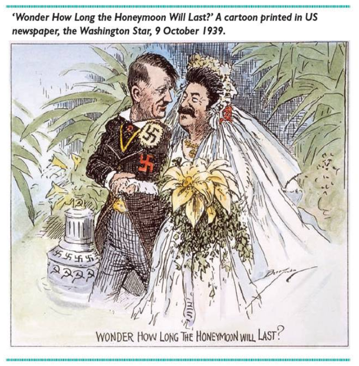

Германия
- В немецких учебниках нападение Германии на Польшу 1 сентября 1939 г. трактуется как ключевое событие, с которого началась Вторая мировая война. При этом подчеркивается роль советско-германского пакта Молотова–Риббентропа, включавшего секретный протокол о разделе Восточной Европы на сферы влияния.
- Немецкие учебники подчеркивают, что истинные цели Гитлера изначально скрывались от населения, а его приход к власти поддержали элиты, видевшие в нём инструмент для реализации своих интересов. Армия и нацистский режим критикуются за расистскую идеологию, преступления против человечности и манипуляцию обществом, при этом опровергаются мифы вроде «превентивной войны» против СССР.
- Сталинградская битва описана как важнейший исторический рубеж на пути к победе народов СССР и их вооруженных сил в Великой Отечественной войне. Победа, одержанная в ней Красной Армией, окончательно перечеркнула планы нацистского руководства Германии сокрушить Советский Союз, захватить его земли, превратить его народы в рабов германских хозяев.
- Битва за Берлин называется «символом жестокости той войны». Гитлер принёс в бессмысленную жертву массу молодых людей и стариков, десятки тысяч мирных жителей.
- В немецких учебниках истории особое значение уделяется формированию исторической памяти и критическому осмыслению нацистского прошлого, чтобы предотвратить повторение преступлений. Основной акцент делается на морально-этическом воспитании: через описание геноцида, Холокоста и преступлений нацизма ученикам показывают, что эти трагедии стали возможны не только из-за действий режима, но и из-за пассивности, молчаливого согласия или прямого соучастия обычных граждан.
- В немецких учебниках истории бомбардировки Хиросимы и Нагасаки рассматриваются как трагическое и противоречивое событие, завершившее Вторую мировую войну. В более широком смысле бомбардировки Хиросимы и Нагасаки преподносятся как начало ядерной эры, повлиявшее на глобальную политику холодной войны, гонку вооружений и движение за разоружение.
- Нацистская Германия была для СССР агрессором и смертельным врагом, а сотрудничество в 1939–1941 годах оценивается как циничный эпизод, не отменяющий глубины противоречий и трагедии последующего конфликта.
Китай
- Начало Второй мировой войны связывают не с 1939 годом (нападение Германии на Польшу), а с Маньчжурским инцидентом 18 сентября 1931 года, когда Япония оккупировала северо-восток Китая. Этот подход подчеркивает 14-летнюю антияпонскую войну (1931–1945) как часть глобального конфликта.
- Основное внимание сосредоточено на антияпонском сопротивлении, но немецкая армия и Адольф Гитлер упоминаются в контексте глобального фашизма.
- Сталинградская битва (1942–1943) рассматривается как ключевой переломный момент во Второй мировой войне, определивший крах нацистской агрессии и усиливший антифашистскую коалицию.
- Освобождение Берлина (апрель–май 1945 г.) описывается как кульминация совместных усилий антифашистской коалиции, где решающую роль сыграла Красная армия СССР.
- Акцент при анализе итогов Второй мировой войны делается на единстве народа, массовом сопротивлении и идеологической сплочённости под руководством Коммунистической партии Китая (КПК).
- Атомные бомбардировки Хиросимы и Нагасаки (6 и 9 августа 1945 г.) в китайской историографии оцениваются как события, завершившие войну на Тихом океане, но осуждаются за катастрофические последствия.
- СССР в период Второй мировой войны изображается как ключевой союзник в антифашистской борьбе, чья роль оценивается позитивно, но с акцентом на прагматизм сотрудничества.
Великобритания
- В британских учебниках начало Второй мировой войны связывают с политикой умиротворения Германии, которая трактуется как вынужденная мера из-за экономической слабости Великобритании и пацифистских настроений общества.
- Дюнкеркская эвакуация (1940 г.) в британских учебниках подаётся не как военная катастрофа, а как «чудесное спасение», подчеркивающее стойкость и решимость нации. Нейтральное упоминание тактики Германии и роли Гитлера служит для объективного анализа, а не моральных оценок.
- В учебниках Сталинградская битва (1942–1943) описывается как ключевой переломный момент в войне против Германии, но её подача сочетает признание советских успехов с акцентом на коллективный вклад союзников.
- В британских учебниках освобождение Берлина представлено с акцентом на вклад Великобритании и союзников в победу над нацистской Германией, но без четкого указания, кто именно взял город.
- Особым значением в достижении победы над нацизмом с позиции Великобритании наделяется боевой дух и мужество как военных, так и гражданских, а также решительные действия У. Черчилля.
- до начала Второй мировой войны Великобритания рассматривала СССР скорее как угрозу, чем как союзника. Многие британские политики и общественность видели в коммунизме большую опасность. Однако с началом войны Сталин стал восприниматься как необходимый союзник в борьбе против Гитлера.
США
- 1 сентября 1939 года Германия вторглась в Польшу, а 3 сентября Великобритания и Франция объявили ей войну. В соответствии с тайными договорённостями пакта 17 сентября 1939 года СССР начал вторжение в восточные регионы Польши, к тому времени уже практически разгромленной немецкими войсками. К началу октября Польша была полностью оккупирована и разделена между СССР и Германией, при этом Советский Союз получил большую часть территорий.
- В учебниках США Гитлер изображается как тоталитарный диктатор, развязавший войну и ответственный за Холокост, а немецкая армия представлена как высокоорганизованная, но подчиненная нацистской идеологии сила, активно участвовавшая в военных преступлениях. Акцент делается на моральном осуждении режима и его преступлений против человечности.
- Поражение под Сталинградом стало переломным моментом войны. Советские войска начали вытеснять немецкую армию на запад — с территории СССР в направлении Германии.
- В учебниках США освобождение Берлина описывается как завершающий этап Второй мировой войны в Европе, где ключевую роль сыграла Красная Армия. Подчеркивается, что советские войска взяли Берлин в конце апреля 1945 года, что привело к самоубийству Гитлера 30 апреля и окончательному падению нацистского режима.
- В учебниках подчеркивается влияние стратегического планирования и ключевых сражений, таких как Сталинград и Нормандия, на изменение хода войны. Кроме того, уделяется внимание роли союзников в координации усилий против нацистской Германии.
- В учебниках США сброс бомбы на Японию оправдывается желанием избежать больших людских потерь со стороны америки и нежеланием Японии капитулировать.
- Во Второй мировой войне СССР и США были союзниками в рамках антигитлеровской коалиции. После нападения Германии на СССР в 1941 году и вступления США в войну (после атаки на Перл-Харбор) две страны, несмотря на идеологические противоречия, объединились против общего врага — стран Оси. США, Великобритания и СССР сформировали «Большую тройку», координируя военные усилия.
Потери стран по итогам войны
Жертвы стран
Германия
от 6 900 000
до 8 400 000
6.9M - 8.4M
Общее количество жертв в мире по версии разных стран
- 1. Сравнительные потери: Германия, хотя и считается одной из основных воюющих сторон, имеет значительно меньшие оценки жертв (от 6,9 до 8,4 миллиона) по сравнению с Китаем, который понес огромные потери — 15,5 миллиона. Это подчеркивает, что конфликт в Китае был особенно разрушительным, возможно, из-за масштабов боевых действий и жестокости оккупации.
- 2. Разница в оценках жертв: Общее количество жертв по разным странам варьируется. Эти различия могут быть связаны с методологиями подсчета, включением или исключением определенных категорий жертв (гражданские, военные, жертвы голода и болезней).
- 3. Относительные масштабы: Показатели для Великобритании и США (412 240 и 417 000 соответственно) значительно ниже, потому что на территории этих стран не велись масштабные боевые действия, как у стран Восточной Европы и Азии.
Плакаты, постеры и карикатуры
1943-й год. ВРАГ ВИДИТ ТВОЙ СВЕТ!
Немецкий плакат, призывающий не забывать о светомаскировке.

Оптимизм: "Победа будет за нами! Король нашел один четырехлистный клевер!". По британским поверьям четырехлистный клевер приносит удачу тому, кто его найдет. Номер вышел зимой 41-го, когда бомбардировки Лондона стали намного менее интенсивными, но все еще продолжались.
Источник

Контекст: пакт Молотова-Риббентропа
Их американского источника Cold